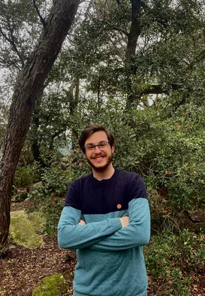
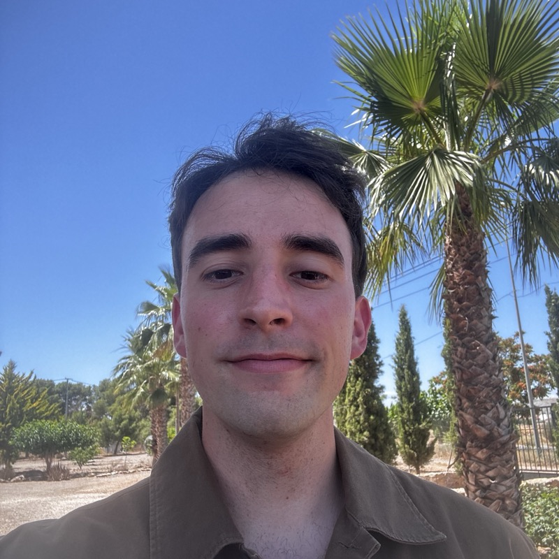

Usamos datos geoespaciales e inteligencia artificial para transformar cómo se estudian, monitorean y gestionan los sistemas naturales. Lo que no se mide, no se gestiona. Y lo que no se ve desde el espacio, hoy ya se puede entender.
We use geospatial data and artificial intelligence to transform how natural systems are studied, monitored and managed. What isn't measured can't be managed. And what couldn't be seen from space can now be understood.
El valor no está en la imagen, sino en lo que la IA entiende de ella. Entrenamos nuestros propios modelos para leer cada píxel, y agentes Geo AI que te lo explican en lenguaje natural.
The value isn't the image; it's what the AI understands from it. We train our own models to read every pixel, plus Geo AI agents that explain it back to you in plain language.
Desliza para revelar ⇄Swipe to reveal ⇄
Cómo leen el paisaje nuestros modelos
How our models read the landscape
01
CAPTURA
CAPTURE
Reunimos los datos de la Tierra
We gather the Earth's data
Imágenes de satélite y dron, radar, LiDAR y clima de múltiples fuentes, alineados en el espacio y el tiempo.
Satellite and drone imagery, radar, LiDAR and climate from many sources, aligned in space and time.
02
PROCESA
PROCESS
Nuestros modelos leen cada píxel
Our models read every pixel
Redes neuronales propias segmentan, clasifican y miden vegetación, suelo y agua, entrenadas para los sistemas naturales que estudiamos.
Our own neural networks segment, classify and measure vegetation, soil and water, trained for the natural systems we study.
03
ENTIENDE
UNDERSTAND
Los agentes Geo AI lo interpretan
Geo AI agents interpret it
Un asistente conversacional cruza las capas, detecta cambios y responde tus preguntas sobre el territorio en lenguaje natural.
A conversational assistant cross-reads the layers, detects change and answers your questions about the land in plain language.
04
DECIDE
ACT
Decisiones, no solo mapas
Decisions, not just maps
Indicadores accionables: conectividad, riesgo, degradación y métricas ESG, listos para gestionar el territorio.
Actionable indicators: connectivity, risk, degradation and ESG metrics, ready to manage the land.
Las fuentes que combinamos
The sources we fuse
Seis tipos de datos, un solo modelo del territorio
Six data types, one model of the land
Misiones abiertas
Open missions
Sentinel, Landsat y MODIS: series temporales globales, gratuitas y continuas para monitorear el cambio.
Sentinel, Landsat and MODIS: global, free, continuous time series to monitor change.
Imágenes VHR
VHR imagery
Muy alta resolución para detectar detalles a escala de parcela, árbol o infraestructura.
Very high resolution to detect detail at the scale of a field, a tree or a structure.
Índices espectrales
Spectral indices
NDVI, NDWI y bandas multiespectrales para medir vegetación, agua y salud del ecosistema.
NDVI, NDWI and multispectral bands to measure vegetation, water and ecosystem health.
Radar SAR / InSAR
SAR / InSAR radar
Datos que atraviesan nubes y oscuridad: humedad del suelo, deformación del terreno y estructura.
Data that sees through clouds and darkness: soil moisture, ground deformation and structure.
LiDAR y elevación
LiDAR & elevation
Modelos 3D del terreno y la vegetación: altura del dosel, pendientes y volúmenes.
3D models of terrain and vegetation: canopy height, slopes and volumes.
Clima y temperatura
Climate & temperature
Temperatura superficial (LST), precipitación y variables climáticas para contextualizar el territorio.
Land surface temperature (LST), precipitation and climate variables to put the land in context.
Visor interactivo para el monitoreo de hábitats y pastos en áreas protegidas. Índices de vegetación, clasificación, suelo, clima y detección de cambios, capa a capa.
Interactive viewer for habitat and pasture monitoring across protected areas. Vegetation indices, classification, soil, climate and change detection, layer by layer.
Abrir plataforma →Open platform →
Agentes de IAAI Agents
Darwin Maps
Visor geoespacial con IA para el análisis del territorio. Capas ambientales, análisis por provincias y un asistente Geo AI que interpreta el paisaje por ti.
AI-powered geospatial viewer for land analysis. Environmental layers, province-level analysis and a Geo AI assistant that interprets the landscape for you.
Explorar mapa →Explore map →
Sostenibilidad (ESG)Sustainability (ESG)
Soil SaveR
Plataforma para monitorear el carbono orgánico del suelo y rastrear 70 años de degradación a escala de parcela, en una experiencia de scrollytelling única.
Platform to monitor soil organic carbon and track 70 years of degradation at field scale, through a unique scrollytelling experience.
Explorar proyecto →Explore project →
Software para la NaturalezaSoftware for Nature
Darwin Oceans
Plataforma interactiva para datos oceánicos: temperatura superficial del mar, clorofila, corrientes y más capas ambientales marinas.
Interactive platform for ocean data: sea surface temperature, chlorophyll, currents and more marine environmental layers.
Abrir plataforma →Open platform →
Software para la NaturalezaSoftware for Nature
Urban Nature Solutions
Soluciones basadas en la naturaleza para ciudades resilientes: simulación CFD de viento, islas de calor, infraestructura verde y conectividad ecológica.
Nature-based solutions for resilient cities: CFD wind simulation, heat islands, green infrastructure and ecological connectivity.
Agenda una llamada →Book a call →
Sostenibilidad (ESG)Sustainability (ESG)
End World Hunger Ohio
Partners de End World Hunger Ohio, un jardín comunitario en Columbus que impulsa la soberanía alimentaria a través de la agricultura regenerativa.
Partners of End World Hunger Ohio, a community garden in Columbus driving food sovereignty through regenerative agriculture.
Visitar web →Visit website →
¿Hablamos?
Let's talk
Transforma tus datos en decisiones para el territorio.
Solo apoyamos proyectos que tienen un impacto positivo y directo en la naturaleza. Creemos que los datos son la piedra angular de una gestión eficaz, y los datos espaciales proporcionan la dimensión más poderosa.
We only support projects that have a direct positive impact on nature. We believe that data is the cornerstone of effective management, and spatial data provides the most powerful dimension.
Sinergias entre sectores
Synergies across sectors
El mayor impacto proviene de la colaboración. Crear sinergias entre sectores, desde el turismo hasta la silvicultura, nos permite diseñar las mejores soluciones para las personas y el planeta.
The greatest impact comes from collaboration. Creating synergies across sectors, from tourism to forestry, allows us to design the best solutions for people and the planet.
IA responsable
Responsible AI
Desarrollamos y entrenamos nuestros propios modelos de IA para garantizar que comprendan verdaderamente los sistemas naturales con los que trabajamos.
We develop and train our own AI models to ensure they truly understand the natural systems we work with.
Fundador y líder técnico de Darwin Geospatial. Líder en datos e IA con experiencia internacional en Silicon Valley en la industria de finanzas de cadena de suministro y recursos naturales.
Founder and technical leader of Darwin Geospatial. Data and AI leader with international experience working at Silicon Valley in the supply chain finance and natural resources industry.
Mario García Peces
CEO Europe & Head of Geospatial
Ingeniero Forestal y Analista Geoespacial con experiencia internacional en gestión ambiental y modelización espacial. Ha trabajado con el OAPN y en investigaciones sobre prácticas agrícolas sostenibles.
Forest Engineer and Geospatial Analyst with international experience in environmental management and spatial modeling. Has worked with OAPN and on sustainable agricultural research.
Nicholas Cosgrove
Asesor - GTM
Advisor - GTM
Líder tecnológico y asesor enfocado en construir herramientas que ayudan a las personas y protegen el planeta. Aporta experiencia en IA centrada en el humano, tecnología geoespacial y trabajo ambiental comunitario.
Technology leader and advisor focused on building tools that help people and heal the earth. Brings experience across human-centered AI, geospatial technology, and community-driven environmental work.
Benjamin Zaitchik
Asesor Científico Senior
Senior Scientific Advisor
Catedrático de Ciencias de la Tierra y Planetarias en la Universidad Johns Hopkins. Experto en hidrología, clima y teledetección, asesora la base científica de nuestros modelos ambientales.
Professor of Earth and Planetary Sciences at Johns Hopkins University. Expert in hydrology, climate and remote sensing, advising on the science behind our environmental models.

Joan Medina
AI & Software
Ingeniero Informático con Máster en Inteligencia Artificial. Especializado en aprendizaje automático y análisis de datos a escala, desarrollando modelos predictivos y sistemas de procesamiento inteligente.
Computer Engineer with a Master's in Artificial Intelligence. Specialized in machine learning and data analysis at scale, developing predictive models and intelligent processing systems.

Mario Parra
Forward Deployed Engineer
Ingeniero Informático y estudiante de Máster en Inteligencia Artificial. Especializado en el desarrollo de software y modelos de Deep Learning, implementando soluciones automatizadas y arquitecturas escalables para entornos críticos.
Computer Engineer and Master's student in Artificial Intelligence. Specialized in software development and Deep Learning models, implementing automated solutions and scalable architectures for critical environments.
Colaboradores de investigación
Research collaborators
Dr. Víctor M. Tenorio Gómez, PhD
Investigador - IA y Procesamiento de Señales
Researcher - AI & Signal Processing
Doctor por la Universidad Rey Juan Carlos (URJC) en Tecnologías de la Información y las Comunicaciones. Su investigación se centra en el procesamiento de señales sobre grafos, redes neuronales en grafos y aprendizaje automático.
PhD in Information Technology and Communications from Universidad Rey Juan Carlos (URJC). His research focuses on graph signal processing, graph neural networks, and machine learning.
Sandupal Dutta
Doctorando en Oceanografía Física y Teledetección
PhD Student in Physical Oceanography & Remote Sensing
Doctorando en Ciencias Terrestres y Planetarias en la Universidad Johns Hopkins. Investiga oceanografía física, teledetección y aprendizaje automático. Colabora con Darwin en el reto NASA Space to Soil.
PhD student in Earth and Planetary Sciences at Johns Hopkins University. Researches physical oceanography, remote sensing, and machine learning. Collaborates with Darwin on the NASA Space to Soil challenge.